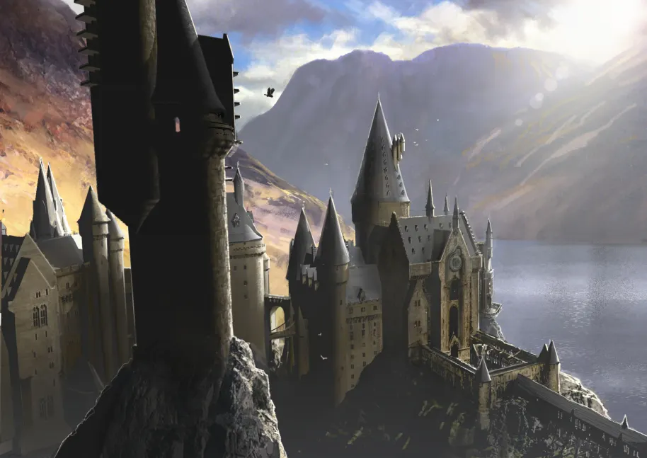
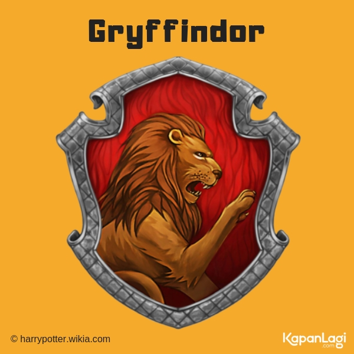
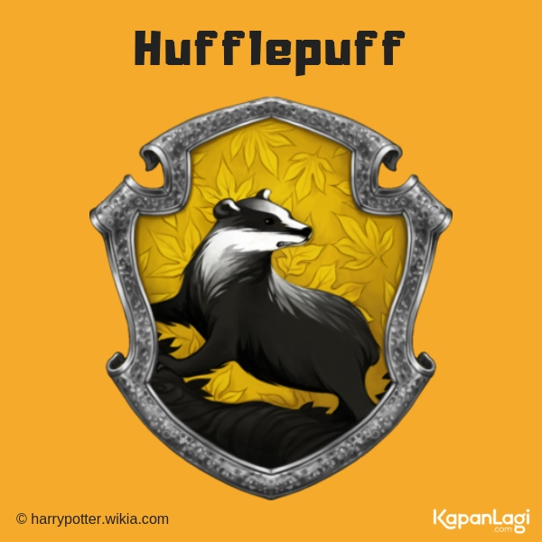
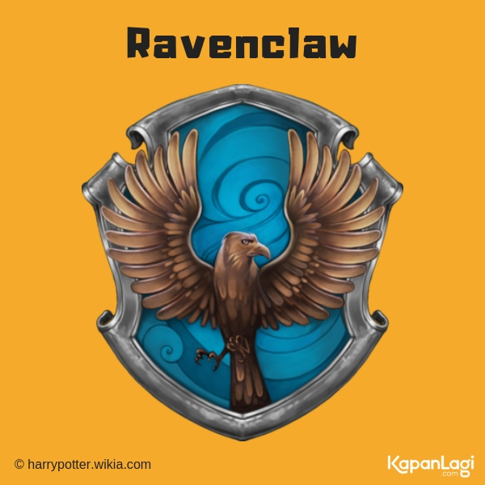
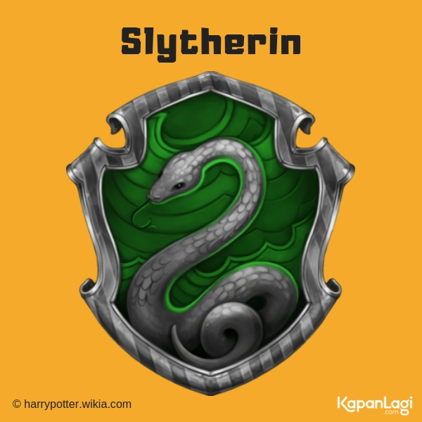

SEJARAH BERDIRINYA HOGWARTS

PENDIRI HOGWARTS
Hogwarts didirikan oleh empat penyihir hebat bernama Godric Gryffindor, Salazar Slytherin, Rowena Ravenclaw, dan Helga Hufflepuff pada sekitar tahun 1000 M. Nama-nama mereka kemudian dijadikan sebagai nama asrama murid-murid Hogwarts yang memiliki kepribadian yang sesuai dengan keempat pendiri tersebut. Hogwarts memiliki semboyan "draco dormiens nunquam titillandus" yang berarti "jangan membangunkan naga tidur".
Berkaitan dengan Salazar Slytherin, diceritakan dalam Harry Potter dan Kamar Rahasia bahwa Slytherin membangun sebuah kamar rahasia yang dihuni oleh monster yang hanya bisa dikendalikan oleh keturunan Slytherin (belakangan diketahui kalau monster ini adalah Basilisk, ular raksasa yang bisa membunuh hanya dengan pandangan matanya). Slytherin membangun kamar rahasia ini dengan harapan agar cita-citanya untuk menjadikan Hogwarts sebagai sekolah sihir hanya untuk mereka yang berasal dari keluarga penyihir dapat terwujud.
LOKASI DAN INFORMASI
Lokasi Hogwarts sangat dirahasiakan oleh dunia sihir, khususnya dari komunitas Muggle (komunitas non-sihir, yaitu orang-orang yang tidak memiliki kemampuan sihir). Rowling menyatakan bahwa Hogwarts terletak di daerah bergunung-gunung dan di salah satu daerah terpencil di Inggris, di dekat sebuah desa bernama Hogsmeade.
Hogwarts juga dilindungi dengan banyak sihir oleh setiap kepala sekolah yang sedang menjabat untuk melindungi baik dari komunitas muggle maupun komunitas penyihir. Untuk menyembunyikan keberadaan Hogwarts dari komunitas Muggle, bangunan Hogwarts diperlihatkan sebagai rumah tua yang tidak berpenghuni. Terhadap penyihir, Hogwarts dilindungi dari "penyihir-yang-tidak-diundang". Bahkan penyihir terbaik pun tidak bisa mempergunakan ilmu "apparate" dan "disapparate" (secara sihir menghilang dari satu tempat dan langsung muncul kembali di tempat lain) untuk datang ke dan pergi dari Hogwarts (kecuali peri rumah). Walaupun demikian, dalam beberapa bagian dari serial ini, ada celah-celah tertentu yang tanpa sadar tidak terlindungi oleh kepala sekolah, sehingga akhirnya dapat juga dimasuki oleh pihak-pihak lawan (contoh: lemari pelenyap di Kamar Kebutuhan).
Di dekat Hogwarts terdapat suatu desa yang hanya dihuni oleh komunitas sihir yaitu Hogsmeade. Murid-murid Hogwarts memperoleh izin dari para guru untuk mengunjungi Hogsmeade mulai tahun ketiga mereka dengan menyertakan izin dari orang tua/ wali.
Pada setiap akhir tahun ajaran, murid-murid Hogwarts wajib mengikuti ujian-ujian sesuai dengan pelajaran yang diambilnya. Namun ada ujian khusus yang perlu diambil pada tahun kelima dan ketujuh. Pada akhir tahun kelima, mereka wajib mengambil ujian O.W.L (Ordinary Wizarding Levels). Sedangkan pada akhir tahun ketujuh, mereka akan mengikuti ujian N.E.W.T (Nastily Exhausting Wizarding Tests). Sistem pendidikan ini mirip dengan sekolah-sekolah berasrama di Inggris.
ASRAMA HOGWARTS
Gryffindor

Nilai asrama Gryffindor adalah keberanian, kesetiaan, tekad kuat, dan memiliki sifat kepahlawanan. Lambang asrama adalah singa, dan warna asrama adalah merah dan emas. Kepala asramanya adalah guru Transfigurasi, Minerva McGonagall, dan hantu asramanya adalah Sir Nicholas de Mimsy-Porpington, yang lebih dikenal sebagai Nick Si Kepala Nyaris Putus. Pendiri asramanya adalah Godric Gryffindor.
Ruang rekreasi Gryffindor terletak di salah satu menara benteng tertinggi, pintu masuk yang terletak di lantai tujuh di sayap timur kastil dan dijaga oleh sebuah lukisan Nyonya Gemuk, yang mengenakan gaun merah muda. Dia mengizinkan siswa masuk hanya setelah siswa itu dapat memberikan kata kunci yang benar, seperti yang diketahui dalam buku yang ketiga, ketika Sirius Black mencoba memaksa masuk ke menara, hanya untuk dicegah masuk oleh Nyonya Gemuk setelah ia tidak bisa memberikan kata kunci yang benar. Dalam buku pertama, Neville Longbottom cenderung lupa kata kunci dan harus menunggu di dekat lukisan itu sampai siswa Gryffindor lainnya tiba untuk membukakan jalan baginya.
Hufflepuff

Nilai asrama Hufflepuff adalah kerja keras, toleransi, loyalitas, dan keadilan. Lambang asrama adalah luak, dan warna asrama adalah kuning kenari dan hitam tengah malam. Kepala asramanya adalah guru Herbologi, Pomona Sprout, dan hantu asramanya adalah Si Rahib Gemuk The Fat Friar. Menurut Rowling, Hufflepuff memiliki hubungan dengan elemen bumi. Pendiri asrama ini adalah Helga Hufflepuff.
Asrama-asrama Hufflepuff dan ruangan umumnya terletak di suatu tempat di ruang bawah tanah. Pintu masuk ditemukan di belakang sebuah lukisan hidup di suatu tempat di dekat dapur, kata kunci diperlukan untuk masuk. Ruang rekreasi Hufflepuff diisi dengan hiasan kuning dan kursi-kursi empuk berlengan dan memiliki terowongan bawah tanah yang mengarah ke asrama, yang semuanya memiliki pintu bulat sempurna, seperti penutup drum (mirip seperti sarang luak).
Ravenclaw

Nilai asrama Ravenclaw adalah kecerdasan, kreativitas, kegemaran belajar, dan kecantikan/ketampanan. Lambang asramanya adalah seekor elang dan lambang warnanya adalah biru dan perunggu (biru dan abu-abu). Kepala asramanya adalah profesor Filius Flitwick, dan hantu asramanya adalah The Lady Grey. Menurut Rowling, Ravenclaw berhubungan erat dengan elemen udara. Pendiri asramanya adalah Rowena Ravenclaw.
Asrama-asrama Ravenclaw berlokasi di Menara Ravenclaw di sisi barat sekolah. Ruangan rekreasinya, seperti yang diungkapkan pada klimaks dari seri Deathly Hallows, berbentuk bulat dan penuh dengan hiasan biru dan kursi-kursi empuk, memiliki langit-langit berbentuk kubah yang dicat dengan bentuk bintang-bintang dan fitur patung replika Rowena yang sedang mengenakan mahkotanya. Harry juga mencatat bahwa, pada siang hari, anak-anak Ravenclaw "akan memiliki pemandangan spektakuler dari pegunungan sekitarnya." Sebuah teka-teki logis harus diselesaikan untuk mendapatkan izin masuk, sedangkan ruang rekreasi Gryffindor, Hufflepuff dan Slytherin hanya membutuhkan kata kunci, hal ini menunjukkan bahwa mungkin akan menjadi lebih mudah bagi siswa dari asrama-asrama lain yang memiliki tingkat kecerdasan yang tinggi untuk memasuki ruang rekreasi Ravenclaw dibandingkan dengan asrama yang lain . Profesor McGonagall, kepala asrama Gryffindor, berhasil memecahkan teka-teki itu dengan akurat.
Slytherin

Nilai asrama Slytherin adalah ambisi, idealis, kepemimpinan, kecerdikan, dan yang paling penting adalah memiliki darah penyihir murni. Lambang asrama Slytherin adalah ular, dan warna asramanya adalah hijau dan perak. Pendiri asramanya adalah Salazar Slytherin. Kepala asramanya adalah Severus Snape sampai menjelang akhir buku keenam. Kemudian, Horace Slughorn, kepala asrama yang sebelumnya, muncul dari masa pensiunnya mengambil alih kembali otoritas yang pernah dimilikinya. Hantu asrama Slytherin adalah Si Baron Berdarah, The Bloody Baron.[7] Asrama Slytherin dan ruang rekreasinya dapat dicapai melalui sebuah dinding batu yang sederhana di bawah tanah. Ruang rekreasi Slytherin berbentuk panjang, rendah, seperti gaya ruang bawah tanah, yang terletak di bawah Danau Hogwarts, dilengkapi dengan lampu hijau dan kursi berukir yang berlengan. Ruangan ini dijelaskan dalam buku kedua sebagai memiliki cahaya kehijauan.
Topi Seleksi mengklaim bahwa kemurnian darah adalah sebuah faktor dalam memilih Slytherin, meskipun hal ini tidak disebutkan sampai buku yang kelima. Tidak ada alasan untuk percaya, bagaimanapun, bahwa siswa kelahiran Muggle tidak dapat dipilih untuk berada di asrama tersebut, hanya siswa yang berdarah murni saja yang lebih diinginkan untuk masuk ke asrama tersebut, karena ada beberapa contoh darah campuran yang dimasukkan ke dalam asrama tersebut (seperti Snape dan Voldemort). Dalam Deathly Hallows sebuah kelompok Snatchers (polisi rahasia Kementerian yang pro-Voldemort) mengklaim bahwa tidak banyak darah lumpur (penyihir kelahiran-muggle) yang masuk ke Slytherin.
Ketika percaya bahwa Harry akan segera mati saat itu juga dan berpikir bahwa ia telah mendapatkan kemenangan akhir dalam genggamannya, Voldemort menyatakan niatnya untuk menghapuskan tiga asrama lain dan memaksa semua siswa Hogwarts untuk pindah ke Slytherin. Rencana ini digagalkan oleh kekalahan dan kematiannya sendiri, yang membuat Slytherin menjadi lebih lunak dalam hal kemurnian darah, tidak ada lagi sisa keinginan untuk mempertahankan darah murni seperti sebelumnya. Meskipun begitu, reputasi gelapnya tetap hidup hingga hari ini
WEBSITE RESMI HOGWARTS